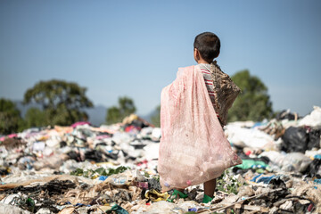
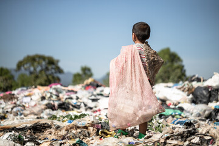

Erradicação da Pobreza
Acabar com a pobreza em todas as suas formas, em todos os lugares.
Dia 17 de Outubro: Dia Internacional para a Erradicação da Pobreza
Acabar com a pobreza em todas as suas formas, em todos os lugares.
Dia 17 de Outubro: Dia Internacional para a Erradicação da Pobreza
Art. 3º Constituem objetivos fundamentais da República Federativa do Brasil:
III - erradicar a pobreza e a marginalização e reduzir as desigualdades sociais e regionais;
(Constituição Federal / 1988)
Fonte: https://brasil.un.org/pt-br/sdgs/1
O número de pessoas em extrema pobreza cresceu nos últimos meses. Mais de 792 mil famílias estão nessa situação. Os dados são do cadastro único da Prefeitura de São Paulo.
Fonte: Jornal da Gazeta:
https://www.youtube.com/@jornaldagazeta/featured
Estudo revela que 29,6% dos brasileiros têm renda familiar inferior a R$ 497 mensais.
O estado com menor taxa de pobreza em 2021 foi Santa Catarina (10,16%). No extremo oposto está o Maranhão, com a maior proporção de pobres (57,90%).
Fonte:FGV:https://portal.fgv.br/noticias/mapa-nova-pobreza-estudo-revela-296-brasileiros-tem-renda-familiar-inferior-r-497-mensais
Abaixo, temos uma breve evolução dos indicadores de
pobreza monetária, pobreza multidimensional e
isegurança alimentar no país à luz de considerações sobre o papel das políticas sociais no combate à fome e pobreza
nos últimos 30 anos.
Fonte: NEXO:
https://pp.nexojornal.com.br/perguntas-que-a-ciencia-ja-respondeu/2023/8-
pontos-sobre-pobreza-e-inseguran%C3%A7a-alimentar-no-Brasil
O Brasil é um país desigual. A pobreza atinge uma grande parte de nossa população
e várias famílias lutam para conseguir o que
precisam para sobreviver.
Dentro de nosso país há uma diferença grande se compararmos os estados.
Fonte: Fatos desconhecidos:
https://www.youtube.com/user/fatosdesconhecidos
A pobreza no Brasil tem origem estrutural, derivada de
um processo de colonização pautado pela sociedade escravagista.
Analisando o território nacional como um todo, a população com menor
renda do país se concentra na região Nordeste.
Fonte: UOL:
https://brasilescola.uol.com.br/geografia/pobreza-no-brasil.htm
1.Acabar com a pobreza em todas as suas formas, em todos os lugares
1.1 Até 2030, erradicar a pobreza extrema para todas as pessoas em todos os lugares, atualmente medida como pessoas vivendo com menos de US$ 1,90 por dia
1.2 Até 2030, reduzir pelo menos à metade a proporção de homens, mulheres e crianças, de todas as idades, que vivem na pobreza, em todas as suas dimensões, de acordo com as definições nacionais
1.3 Implementar, em nível nacional, medidas e sistemas de proteção social adequados, para todos, incluindo pisos, e até 2030 atingir a cobertura substancial dos pobres e vulneráveis
1.4 Até 2030, garantir que todos os homens e mulheres, particularmente os pobres e vulneráveis, tenham direitos iguais aos recursos econômicos, bem como o acesso a serviços básicos, propriedade e controle sobre a terra e outras formas de propriedade, herança, recursos naturais, novas tecnologias apropriadas e serviços financeiros, incluindo microfinanças
1.5 Até 2030, construir a resiliência dos pobres e daqueles em situação de vulnerabilidade, e reduzir a exposição e vulnerabilidade destes a eventos extremos relacionados com o clima e outros choques e desastres econômicos, sociais e ambientais
1.a Garantir uma mobilização significativa de recursos a partir de uma variedade de fontes, inclusive por meio do reforço da cooperação para o desenvolvimento, para proporcionar meios adequados e previsíveis para que os países em desenvolvimento, em particular os países menos desenvolvidos, implementem programas e políticas para acabar com a pobreza em todas as suas dimensões
1.b Criar marcos políticos sólidos em níveis nacional, regional e internacional, com base em estratégias de desenvolvimento a favor dos pobres e sensíveis a gênero, para apoiar investimentos acelerados nas ações de erradicação da pobreza
No dia 17 de outubro de 1987, mais de cem mil pessoas se reuniram em Paris
(cidade palco da Declaração Universal dos Direitos Humanos em 1948)
para prestar homenagem às vítimas da pobreza extema, da violência e da fome.
Saiba mais
Fonte: Mercosul:
https://www.mercosur.int/pt-br/
As mudanças implementadas pelo Governo Federal no Bolsa Família têm potencial de reduzir em até 3 milhões o número de pessoas em condição de extrema pobreza e de contribuir para ampliar a massa de renda disponível para as famílias em 2023.
A projeção de redução da pobreza é do economista Daniel Duque, do Ibre/FGV. Segundo informações do IBGE, o Brasil tinha 12,4 milhões de pessoas na condição de extrema pobreza no último trimestre de 2022, com renda de até R$ 208 mensais por pessoa do núcleo familiar. De acordo com o pesquisador, o novo programa de transferência de renda tem potencial para mudar esse cenário.
Leia mais
Fonte: Gov.br:
https://www.gov.br/pt-br
Meu nome é Luciene Lima, residente no Rio de Janeiro, estudante de Desenvolvimento Web do Projeto ElasNaTech - 2023, da JA Brasil.
Contato:
Essa é uma tarefa sobre Objetivos de Desenvolvimento Sustentável (ODS), tema: Erradicação da Pobreza.